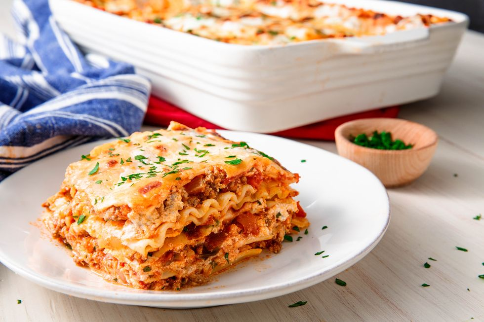

Lasagna

Ingredients
- 2 Cans of Pasta Sauce
- 2 Bricks of Frozen Spinach
- Half Block of Cheese - Shredded
- 4 Carrots
- 2 Zucchini
- 10 Button Mushrooms
- 1 Large Onion
- 1 Full Clove of Garlic
- 1 Box of Oven-Ready Lasagna Pasta
- 500 ml Cottage Cheese
Recipe
The Sauce
- In large pot, on medium heat, begin frying cut up onions
- Add minced garlic and fry untli soft
- Add both cans of pasta sauce
- Add bricks of frozen spinach
- Cut carrots julian-style and add to the pot
- Slice zucchini and mushrooms and add to the pot
The Lasagna
- Preheat oven to 400 degrees Fahrenheit
- In lasagna dish, place a small amount of sauce
- add 1 layer of lasagna pasta
- Spread a thin layer of The Sauce
- Spread layer of shredded cheese
- Add 2nd layer of pasta
- Spread full container of cottage cheese
- Add 3rd layer of pasta
- Add the remaining amount of The Sauce
- Spread remaining shredded cheese
- Cover with tinfoil and bake for 40 minutes with tray on lower rack
- Remove tinfoil and back for 5 minutes only
- Let stand for a minimum of 15 minutes before cutting
Home